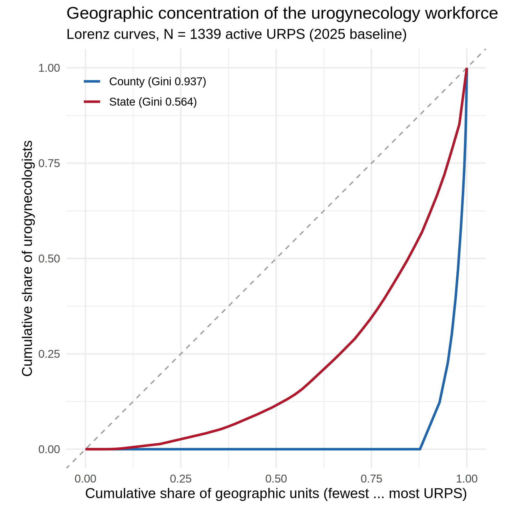

Urogynecology workforce: geographic concentration & equity
Source:WORKFORCE_CONCENTRATION_EQUITY.md
Motivation. cliff’s core result is a supply-vs-retirement count. The Sheps pediatric-subspecialty model (see PEDS_SUBSPEC_MICROSIMULATION_COMPARISON.md) makes the case that a nationally adequate headcount can hide severe subnational maldistribution, and that who and where the workforce is matters as much as how many. This module adds that distribution/equity lens to cliff using the existing de-identified roster — no new data collection.
-
Metrics code:
R/workforce_concentration_metrics.R(Gini, HHI, Lorenz, top-k, rate dispersion, equity breakdown) — base-R/dplyr, runs from a bare clone. -
Driver:
scripts/urps_concentration_equity_2026-08-01.R -
Tests:
tests/testthat/test-concentration-equity.R -
Figure:
figures/urps_concentration_lorenz_2026-08-01.png(+.tiff; Lorenz curves) -
Tables:
data/urps_concentration_by_geography_2026-08-01.csv,data/urps_equity_demographics_2026-08-01.csv,data/urps_lorenz_states_2026-08-01.csv,data/urps_provider_rate_dispersion_2026-08-01.csv
Cohort: N = 1,339 active urogynecologists (URPS) in the 2025 model baseline (1,031 ABOG pathway + 308 ABU pathway), selected by the shared inmodel() filter in R/in_model_baseline.R — the single source of truth every URPS module uses to read the upstream in_model_baseline flag, so this cohort cannot differ from the one behind the Module D geographic figures.
1. Geographic concentration
| Geography | Units | Occupied | % units with zero URPS | Gini | HHI | Top-5 share |
|---|---|---|---|---|---|---|
| US county | 3,143 | 386 | 87.7% | 0.937 | 0.006 | 10.1% |
| US state (incl. DC) | 51 | 48 | 5.9% | 0.564 | 0.051 | 38.4% |
| ACOG district (I–XII, excl. 27 unknown) | 11 | 11 | 0% | 0.171 | 0.100 | — |
Read: - Counties are profoundly maldistributed. Urogynecologists practice in only 386 of ~3,143 US counties — 87.7% of counties have none, and the county Lorenz curve is extreme (Gini 0.937). - State concentration is high too: the top 5 states hold 38% of the workforce and the top 10 hold 57%. California alone has 194 (14.5%), followed by NY (88), TX (85), FL (72), PA (64). - Across ACOG districts the spread is comparatively even (Gini 0.171; range 72–194 members), i.e. maldistribution is a within-region, county-level phenomenon, not a coarse regional one — the same lesson the pediatric model drew at the division level.
County access-rate dispersion (urogynecologists per 100k women 65+, among the 1,052 with a county denominator): median 9.2, IQR 6.3–14.1, and a 90:10 ratio of 5.8 — the best-served decile of providers sits in counties with roughly six times the per-capita supply of the least-served decile.

2. Workforce composition & access equity
Counts (within-column %) by board pathway and overall (N = 1,339):
| Characteristic | ABU (n=308) | ABOG (n=1,031) | Overall |
|---|---|---|---|
| Female | 150 (48.7%) | 560 (54.3%) | 710 (53.0%) |
| US MD | 247 (80.2%) | 800 (77.6%) | 1,047 (78.2%) |
| US DO | 4 (1.3%) | 38 (3.7%) | 42 (3.1%) |
| International medical graduate (IMG) | 1 (0.3%) | 75 (7.3%) | 76 (5.7%) |
| Urban practice | 294 (95.5%) | 993 (96.3%) | 1,287 (96.1%) |
| Suburban | 11 (3.6%) | 23 (2.2%) | 34 (2.5%) |
| Rural | 2 (0.6%) | 13 (1.3%) | 15 (1.1%) |
| Practices in a designated HPSA | 78 (25.3%) | 317 (30.7%) | 395 (29.5%) |
(Med-school class / IMG status carry a ~12% “Unknown” bucket, sourced best-available from Physician Compare → GOBA → Doximity; IMG for the ABU pathway is a lower bound.)
Read: - The workforce is 53% female, and essentially non-rural: only 1.1% practice in rural areas versus 96% urban — a stark access finding for a subspecialty serving an aging, geographically dispersed population. - IMGs differ sharply by pathway (ABOG 7.3% vs ABU 0.3%), a composition signal worth flagging when the two pathways are pooled into one workforce. - Nearly 3 in 10 practice inside a designated Health Professional Shortage Area, but that reflects where dense metros overlap HPSA tracts, not rural reach — consistent with the rurality finding.
Paste-ready manuscript text
Beyond aggregate supply, the urogynecology workforce is highly maldistributed geographically. Active urogynecologists practiced in only 386 of approximately 3,143 US counties (87.7% of counties had none), with a county-level Gini coefficient of 0.94 and a state-level Gini of 0.56; the five highest-supply states accounted for 38% of the workforce. County-level access varied nearly six-fold between the best- and least-served deciles (23.4 vs 4.0 per 100 000 women aged ≥65 at the 90th vs 10th percentile; ratio 5.8). The workforce was 53.0% female and 5.7% international medical graduates, and was almost entirely urban: only 1.1% practiced in rural areas, while 29.5% practiced within a designated Health Professional Shortage Area. These distributional findings indicate that even where the national replacement ratio appears adequate, access is concentrated in a small number of metropolitan counties.
Reproduce
Rscript scripts/urps_concentration_equity_2026-08-01.R
# optional true maldistribution (population-weighted) Gini, needs a Census API key:
CLIFF_PULL_ACS=1 Rscript scripts/urps_concentration_equity_2026-08-01.RNumbers above were computed from the committed enriched rosters (data/abog_all_urps_ENRICHED_2026-07-22.csv, data/abu_all_urps_ENRICHED_2026-07-22.csv, baseline N = 1,339).